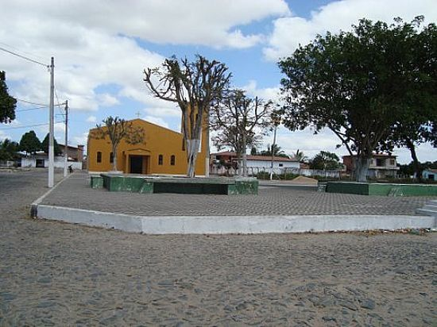
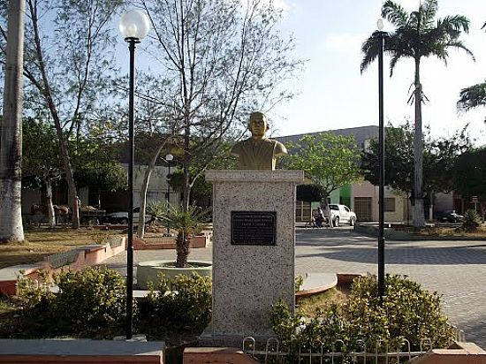

Informações técnicas sobre relevo, população, IDH etc.
| INFORMAÇÕES | |
|---|---|
| Municípios limítrofes | Morrinhos, Acaraú, Senador Sá, Bela Cruz e Granja |
| Fundação | 21 de outubro de 1872 (148 anos) |
| Área total | 583,8 km² |
| Clima | Tropical |
| IDH | 0,612 — médio |
| PIB | R$ 247 507,000 mil |
| INFORMAÇÕES TERRITORIAIS | |
|---|---|
| Número de habitantes | 27.361 habitantes |
| Superfície de Marco |
57 413 hectares
574,13 km² (221,67 sq mi) |
| Densidade populacional | 42,3 hab./km² |
| Altitude de Marco | 20 metros de altitude |
| Coordenadas geográficas decimais |
Latitude:
-3.12453
Longitude: -40.1489 |
| Coordenadas geográficas sexagesimais | Latitude: 3° 7' 28'' Sul , Longitude: 40° 8' 56'' Oeste |
| INFORMAÇÕES DO MUNICÍPIO | |
|---|---|
| Endereço da Prefeitura Municipal de Marco |
Marco
Prefeitura de Marco
Pça. Dom José Tupinambá MARCO - CE, 62560-000 Brasil Work +55 88 3664-1026 Fax (88) 3664-1026 |
| Telefone da prefeitura |
(85) 3105-1369
Internacional: +55 88 3664-1026 |
| Fax |
(88) 3664-1026
Internacional: +55 88 3664-1026 |
| Endereço eletrônico da prefeitura |
Não disponível
|
| Site oficial do município | marco.ce.gov.br |
| INFORMAÇÕES DO ADMINISTRATIVAS | ||
|---|---|---|
| Prefeito de Marco | ROGER NEVES AGUIAR | |
| Partido politico | PDT | |
| INFORMAÇÕES DE TRANSPORTE | |
|---|---|
| Transporte urbano disponível | - |
| Aeroporto |
Aeroporto Internacional Pinto Martins
81.3 km
Aeroporto de Sobral
65.5 km
Aeroporto Internacional Prefeito Dr.João Silva Filho
177.9 km
|
| INFORMAÇÕES DE DISTÂNCIA A OUTRAS CIDADES | ||
|---|---|---|
| São Paulo : 2379 km | Rio de Janeiro : 2226 km | Brasília : 1647 km |
| Salvador : 1111 km | Belo Horizonte : 1904 km | Manaus : 2209 km |
| Curitiba : 2668 km | Fortaleza : 190 km mais perto | Goiânia : 1808 km |
| Belém : 948 km | Porto Alegre : 3215 km | Guarulhos : 2358 km |
| Campinas : 2325 km | São Luís : 467 km | Recife : 801 km |
| Distância calculada em linha reta! | ||
Conheça mais sobre a história de Marco.
Suas origens remontam ao século XVIII, tendo como referência um marco divisório entre a Ribeira do Acaraú e Santana do Acaraú, situando-se meia légua distante do local onde se edificaria a povoação. As terras nas quais se localiza o Município eram, primitivamente, habitadas por índios Tremembés, Aperiús e Acriús, tribos que por desavença familiar se separaram, indo algumas delas residir na Ibiapaba.
Cessadas as desavenças tribais, surgiram os colonizadores brancos, dentre outros, Manuel de Góes Monteiro, pioneiro na ocupação de terras na Ribeira do Acaraú. Surgiram nessa fase as primeiras edificações, em processo lento e persistente, formando ao longo dos anos o conjunto gregário em modestas condições.
O distrito, com jurisdição centralizada em Santana do Acaraú, data de 21 de outubro de 1872, confirmado posteriormente segundo Lei Municipal de 15 de abril de 1893. Sua elevação à categoria de Vila provém do Dec-lei nº 448, de 20 de dezembro de 1938. A elevação à categoria de Município com a denominação atual, provém da Lei nº 1.153, de 22 de novembro de 1951, tendo sido instalado a 25 de março de 1955.
Seu primeiro colégio foi construído na localidade de Gado Bravo, quando Marco ainda era Distrito de Licânia, atual Santana do Acaraú, nas Terras de Inácio Jesuíno Soeiro, um dos primeiros habitantes da Ribeira do Acaraú e também um dos primeiros a libertar seus escravos, muito antes da Lei Áurea.
Embora patriarca de uma importante e tradicional família, não teve nenhum de seus descendentes como prefeito de Marco. Marco conta hoje com um dos maiores Polos Moveleiros do Nordeste, que geram emprego e renda, amenizando assim o problema das secas que assolam o semiárido.
É sede do Projeto de Irrigação do Baixo Acaraú, inaugurado pelo então presidente Fernando Henrique Cardoso, em 2000, outra obra de infraestrutura que alavanca a economia de Marco, gerando emprego e atraindo investimentos de pessoas e empresas até mesmo de outros países, pois Marco já desponta como um potencial exportador de frutas para a Europa, Estados Unidos e Japão, como também seus móveis são igualmente exportados para todos os estados brasileiros e alguns países do Mercosul e América Latina.
Saiba mais sobre os melhores lugares e o que fazer em Marco.
Praça da Matriz em Marco-CE
Praça e igreja de São Francisco
Busto do 1º Prefeito na Praça da Matriz em Marco-CE
Veja como chegar nos melhores pontos de Marco.